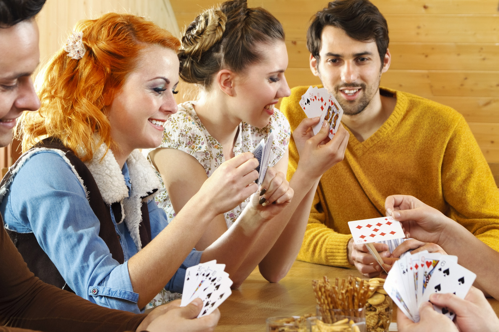

Eléggé társasági embernek tartom magam, nagyon szeretek a barátaimmal lenni. Gyakran összeülünk kártyázni, ami többünknek is kellemes időtöltés. Újfent a holland kocsma nevű játékot játsszuk, melyet az alább leírtak szerint kell játszani.
A játékot több verzióban is játsszák, csak meg kell állapodni a játék elején, milyen szabályok vannak érvényben. Igyekszem átfogóan leírni az általam ismert játékverziók szabályait:
A játék célja, hogy az összes lapod elfogyjon, miközben egy halomba rakod őket. A kártya amit a paklira teszel alapesetben ugyanakkora vagy magasabb értékű kell hogy legyen, mint ami legfölül van.
Ha nincs illeszkedő lapod, fel kell venned az egész kupacot és (megegyezés kérdése) az ellenfeled jön.
Mindig 3 (-4-5, megegyezés kérdése) kártya van a kezedben, ha ennél kevesebb lenne, húznod kell amíg újra 3(-4-5) nem lesz a kezedben. Miután a húzópakli elfogyott, nem kell többet húzni.
Az asztalra helyezünk mindenki elé 3(-4-5) lapot képpel lefelé, valamint ezekre 3(-4-5) lapot képpel felfelé. Ezeket nem játszhatod ki, amíg van a kezedben kártya. A képpel lefelé lévő kártyákat nem nézheted meg, amíg ki nem játszod őket. Először a képpel felfelé lévő kártyákat játsszuk ki, és utána jönnek csak a képpel lefelé fordított lapok.
Mielőtt elkezdődik a játék cserélhetsz a kezedben tartott kártyákból azok közé, mik képpel felfelé vannak előtted az asztalon.
Kettest bármire tehetsz, újraindító kártyaként működik.
Opcionális szabály: Ötöst bármire tehetsz, visszafordító lapként működik, vagyis a következő körben az ellenfelednek ötösnél kisebb (vagy ugyanakkora) lapot kell tennie.
Tízest bármire tehetsz, ekkor az egész pakli "elég", azaz kikerül a játékból. Az új dobópakli első lapját te teheted le.
Egyszerre dobhatsz több kártyát is, ha azok száma megegyezik (opcionális nehezítés: csak akkor dobhatsz több azonos nagyságú kártyát, ha abból 3 vagy több van (tehát 2-t még nem )).
Ha 4 (több pakli kártyával játszva akár több) azonos nagyságú lap kerül a dobópakli tetejére, a pakli kikerül a játékból.
Opcionális szabály: Ha nem tudsz megfelelő kártyát dobni, húzhatsz egyet a húzópakliból, és teheted azt. Ha érvényes kártya, nem kell felvenni a teljes kupacot.
Megegyezés kérdése: bármikor felveheted a teljes dobópaklit, akkor is, ha tudnál rá tenni. Szintén tehetsz vakon lapot bármikor a húzópakli tetejéről is.